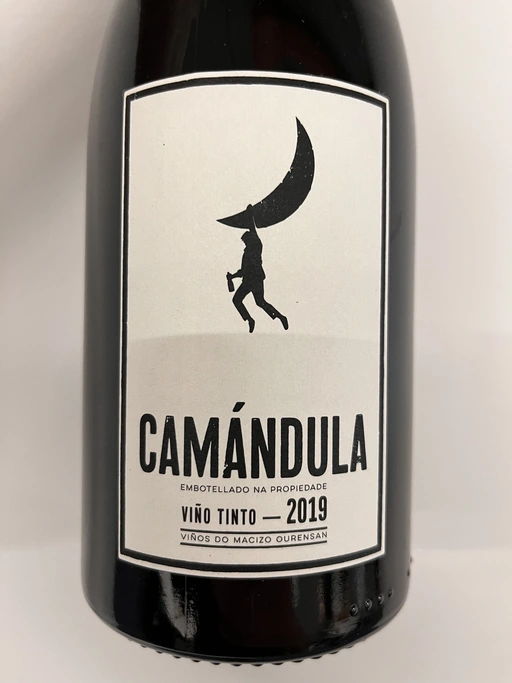

- Type
- Red Still, Dry
- Producer
- Peixes
- Vintage
- 2019
- Location
- Spain, Vino de Mesa
- Grapes
- Field Blend
- Alcohol
- 12
- Sugar
- NA
- Price
- 520 UAH, 590 UAH
- Cellar
- 1 bottle
Producer
Bodegas Peixes is the new project of the 2 guys of Fedellos do Couto, Jesús Olivares and Curro Bareño, outside D.O. Ribeira Sacra, right in the Ourense massif, with vineyards that are exposed to the cold right to the limit where the grapes can have a good ripening. These are some of the highest vineyards in Galicia at 600-850 metres above sea level.
The 60-80 year-old gobelet trained vines grow along sinuous stone terraces. They are field blends of Mencía, Mouraton, Grao Negro, Garnacha Tintorera, Bastardo and Sousón which include 10-15% of white varietals Godello, Dona Blanca, Colgadeira and Palomino. Farming is a mix of organic and sustainable. Jesús and Curro work six hectares themselves, by hand, and with growers who manage a further two hectares. The winemaking is low intervention and constant across their three cuveés: they use whole clusters, long macerations and cool fermentations with indigenous yeasts. Wines are matured in large neutral oak and bottled without fining or filtration.
Ratings
2023-01-18 - 7.50
Vibrant and savoury field blend. Red berries, dog rose, herbs, grounded white pepper and blood. A pleasant palate: it’s fresh and elegant with a metallic and spicy finish. Not chilling it a bit was an obvious mistake. Great QPR.